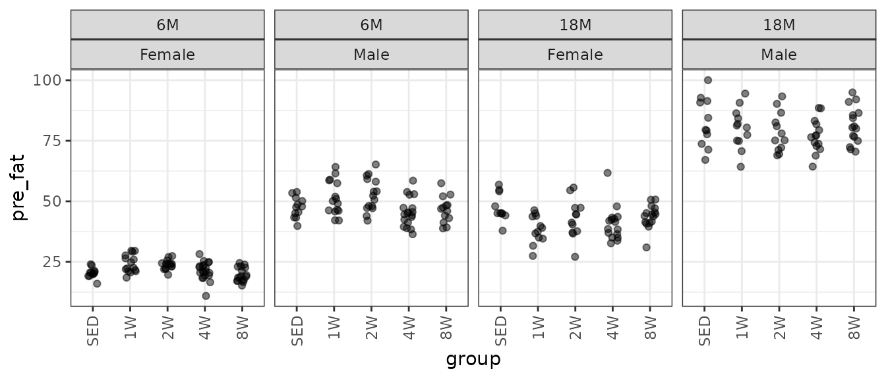
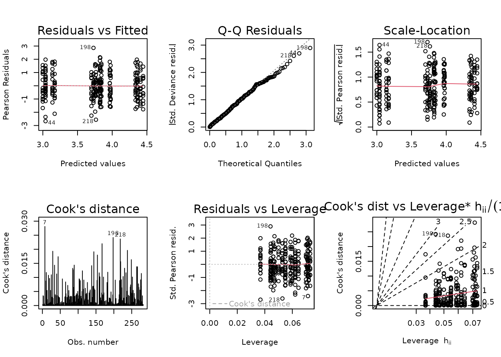
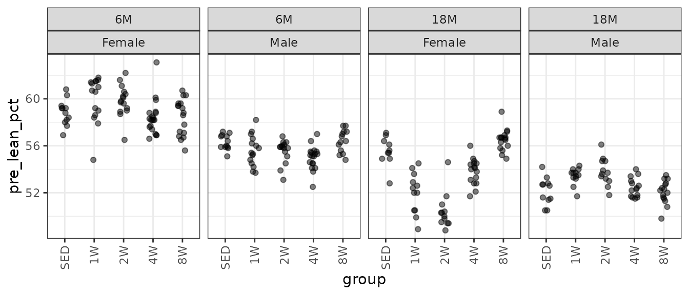
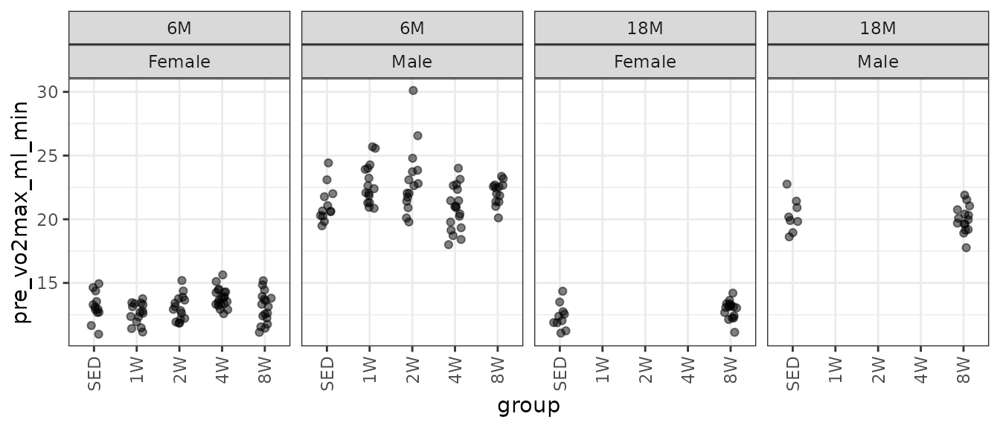
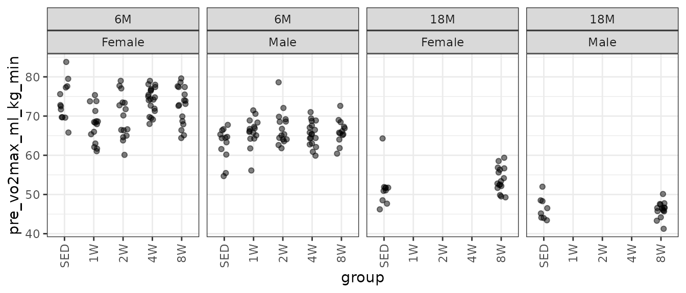
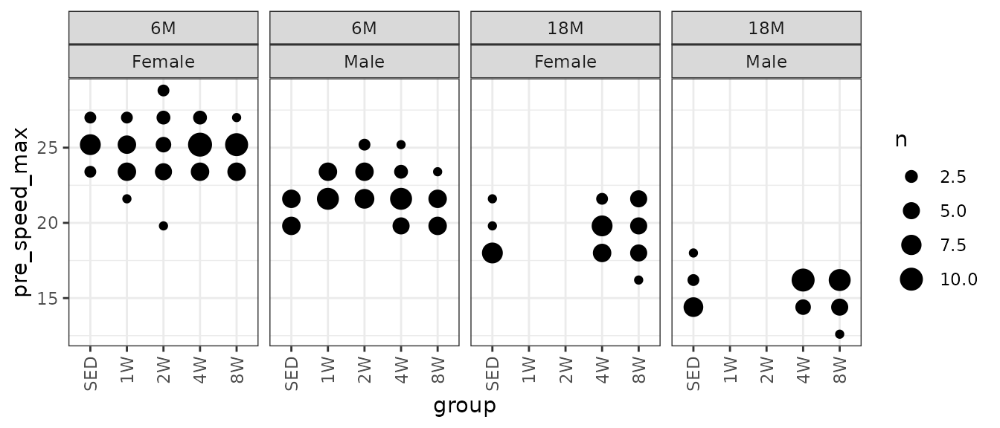

Statistical analyses of baseline body composition and VO2max testing measures
Tyler Sagendorf
01 May, 2024
Source:vignettes/BASELINE_STATS.Rmd
BASELINE_STATS.Rmd
# Required packages
library(MotrpacRatTrainingPhysiologyData)
library(ggplot2)
library(MASS)
library(dplyr)
library(emmeans)
library(tibble)
library(tidyr)
library(purrr)
library(latex2exp)
library(rstatix)
theme_set(theme_bw()) # base plot themeRegression Models
Since all of the measures in this vignette are strictly positive, we will check the mean–variance relationship with code from Dunn and Smyth[1] (pg. 429–430) and fit an appropriate log-link GLM. This allows us to back-transform the means without introducing bias, unlike when the response is transformed. Also, the log-link allows us to test ratios between means, rather than their absolute differences.
Since neither percent fat mass nor percent lean mass approach either of their boundaries of 0 and 100%, we will treat them as if they could take on any positive value. That is, the modeling process will be the same as for the other measures.
If there are obvious problems with the model diagnostic plots, or the mean–variance relationship does not correspond to an exponential family distribution, we will include reciprocal group variances as weights in a log-link Gaussian GLM. Finally, we will remove insignificant predictors to achieve model parsimony based on ANOVA F-tests.
NMR Body Mass
Body mass (g) recorded on the same day as the NMR body composition measures.
# Plot points
ggplot(NMR, aes(x = group, y = pre_body_mass)) +
geom_point(position = position_jitter(width = 0.15, height = 0)) +
facet_grid(~ age + sex) +
theme(axis.text.x = element_text(angle = 90, hjust = 1, vjust = 0.5))There are no obvious outlying values or other issues. We will check the mean–variance relationship.
mv <- NMR %>%
group_by(sex, group, age) %>%
summarise(mn = mean(pre_body_mass),
vr = var(pre_body_mass))
fit.mv <- lm(log(vr) ~ log(mn), data = mv)
coef(fit.mv)
#> (Intercept) log(mn)
#> -4.546389 1.756121
plot(log(vr) ~ log(mn), data = mv, las = 1, pch = 19,
xlab = "log(group means)", ylab = "log(group variances)")
abline(coef(fit.mv), lwd = 2)The slope suggests a variance function approximately of the form \(V(\mu) = \mu^{1.76}\). This is close to a gamma distribution, though the plot shows that the relationship is not exactly linear: the variance decreases in the group with the largest mean. Rather than fitting a gamma GLM, we will fit a weighted log-link Gaussian GLM.
wt.body_mass <- NMR %>%
group_by(age, sex, group) %>%
mutate(1 / var(pre_body_mass, na.rm = TRUE)) %>%
pull(-1)
fit.body_mass <- glm(pre_body_mass ~ age * sex * group,
family = gaussian("log"),
weights = wt.body_mass,
data = NMR)
plot_lm(fit.body_mass)The diagnostic plots seem fine. We will try to simplify the model.
anova(fit.body_mass, test = "F")
#> Analysis of Deviance Table
#>
#> Model: gaussian, link: log
#>
#> Response: pre_body_mass
#>
#> Terms added sequentially (first to last)
#>
#>
#> Df Deviance Resid. Df Resid. Dev F Pr(>F)
#> NULL 281 13738.7
#> age 1 4596.0 280 9142.7 4596.0140 < 2.2e-16 ***
#> sex 1 8808.7 279 334.1 8808.6692 < 2.2e-16 ***
#> group 4 7.9 275 326.1 1.9840 0.09732 .
#> age:sex 1 1.1 274 325.0 1.1287 0.28903
#> age:group 4 54.4 270 270.6 13.5904 4.412e-10 ***
#> sex:group 4 0.3 266 270.4 0.0645 0.99232
#> age:sex:group 4 8.4 262 262.0 2.0934 0.08204 .
#> ---
#> Signif. codes: 0 '***' 0.001 '**' 0.01 '*' 0.05 '.' 0.1 ' ' 1
fit.body_mass.1 <- update(fit.body_mass, formula = . ~ age * group + sex)
anova(fit.body_mass.1, fit.body_mass, test = "F")
#> Analysis of Deviance Table
#>
#> Model 1: pre_body_mass ~ age + group + sex + age:group
#> Model 2: pre_body_mass ~ age * sex * group
#> Resid. Df Resid. Dev Df Deviance F Pr(>F)
#> 1 271 270.73
#> 2 262 262.00 9 8.7277 0.9697 0.4655There is no significant difference between the models, so we will use the simpler one.
fit.body_mass <- fit.body_mass.1
plot_lm(fit.body_mass)The diagnostic plots still look fine.
summary(fit.body_mass)
#>
#> Call:
#> glm(formula = pre_body_mass ~ age + group + sex + age:group,
#> family = gaussian("log"), data = NMR, weights = wt.body_mass)
#>
#> Coefficients:
#> Estimate Std. Error t value Pr(>|t|)
#> (Intercept) 5.195481 0.009373 554.320 < 2e-16 ***
#> age18M 0.289617 0.013419 21.583 < 2e-16 ***
#> group1W 0.058529 0.012852 4.554 7.96e-06 ***
#> group2W 0.052788 0.013249 3.984 8.70e-05 ***
#> group4W -0.006799 0.014909 -0.456 0.649
#> group8W 0.004084 0.012411 0.329 0.742
#> sexMale 0.606721 0.006284 96.547 < 2e-16 ***
#> age18M:group1W -0.115395 0.019505 -5.916 9.91e-09 ***
#> age18M:group2W -0.093808 0.020437 -4.590 6.79e-06 ***
#> age18M:group4W -0.024058 0.019202 -1.253 0.211
#> age18M:group8W -0.014997 0.017206 -0.872 0.384
#> ---
#> Signif. codes: 0 '***' 0.001 '**' 0.01 '*' 0.05 '.' 0.1 ' ' 1
#>
#> (Dispersion parameter for gaussian family taken to be 0.9989952)
#>
#> Null deviance: 13738.74 on 281 degrees of freedom
#> Residual deviance: 270.73 on 271 degrees of freedom
#> AIC: 2320.6
#>
#> Number of Fisher Scoring iterations: 4NMR Lean Mass
Lean mass (g) recorded via NMR.
# Plot points
ggplot(NMR, aes(x = group, y = pre_lean)) +
geom_point(position = position_jitter(width = 0.15, height = 0),
na.rm = TRUE, alpha = 0.5) +
facet_grid(~ age + sex) +
theme(axis.text.x = element_text(angle = 90, hjust = 1, vjust = 0.5))There are several large outlying values in the 6M 1W and 2W male groups. We will check the mean–variance relationship.
mv <- NMR %>%
group_by(sex, group, age) %>%
summarise(mn = mean(pre_lean, na.rm = TRUE),
vr = var(pre_lean, na.rm = TRUE))
fit.mv <- lm(log(vr) ~ log(mn), data = mv)
coef(fit.mv)
#> (Intercept) log(mn)
#> -3.582375 1.512023
plot(log(vr) ~ log(mn), data = mv, las = 1, pch = 19,
xlab = "log(group means)", ylab = "log(group variances)")
abline(coef(fit.mv), lwd = 2)The slope suggests a variance function approximately of the form \(V(\mu) = \mu^{1.5}\). This is intermediate between the Poisson and gamma distributions, though the plot shows that the relationship is not exactly linear: the variance decreases in the group with the largest mean. Rather than fitting a Poisson or gamma GLM, we will fit a weighted log-link Gaussian GLM.
wt.lean <- NMR %>%
group_by(age, sex, group) %>%
mutate(1 / var(pre_lean, na.rm = TRUE)) %>%
pull(-1)
fit.lean <- glm(pre_lean ~ sex * group * age,
family = gaussian("log"),
weights = wt.lean,
data = NMR)
plot_lm(fit.lean)The diagnostic plots look fine. We will try to simplify the model.
anova(fit.lean, test = "F")
#> Analysis of Deviance Table
#>
#> Model: gaussian, link: log
#>
#> Response: pre_lean
#>
#> Terms added sequentially (first to last)
#>
#>
#> Df Deviance Resid. Df Resid. Dev F Pr(>F)
#> NULL 281 12871.5
#> sex 1 11511.5 280 1360.0 11511.5450 < 2.2e-16 ***
#> group 4 1.0 276 1359.0 0.2392 0.915999
#> age 1 924.4 275 434.6 924.4115 < 2.2e-16 ***
#> sex:group 4 6.7 271 427.9 1.6751 0.156105
#> sex:age 1 8.1 270 419.8 8.1378 0.004681 **
#> group:age 4 94.7 266 325.0 23.6824 < 2.2e-16 ***
#> sex:group:age 4 63.0 262 262.0 15.7559 1.44e-11 ***
#> ---
#> Signif. codes: 0 '***' 0.001 '**' 0.01 '*' 0.05 '.' 0.1 ' ' 1The 3-way interaction is significant, so we will not remove any terms.
summary(fit.lean)
#>
#> Call:
#> glm(formula = pre_lean ~ sex * group * age, family = gaussian("log"),
#> data = NMR, weights = wt.lean)
#>
#> Coefficients:
#> Estimate Std. Error t value Pr(>|t|)
#> (Intercept) 4.6588989 0.0117636 396.044 < 2e-16 ***
#> sexMale 0.5832307 0.0197269 29.565 < 2e-16 ***
#> group1W 0.0885367 0.0153876 5.754 2.43e-08 ***
#> group2W 0.0769667 0.0164390 4.682 4.56e-06 ***
#> group4W 0.0045687 0.0186064 0.246 0.806227
#> group8W -0.0031005 0.0164342 -0.189 0.850505
#> age18M 0.2465072 0.0179188 13.757 < 2e-16 ***
#> sexMale:group1W -0.0762441 0.0288676 -2.641 0.008759 **
#> sexMale:group2W -0.0569997 0.0308686 -1.847 0.065944 .
#> sexMale:group4W -0.0688090 0.0309311 -2.225 0.026961 *
#> sexMale:group8W 0.0004479 0.0253346 0.018 0.985909
#> sexMale:age18M -0.0528170 0.0257413 -2.052 0.041179 *
#> group1W:age18M -0.2346420 0.0263665 -8.899 < 2e-16 ***
#> group2W:age18M -0.2163285 0.0316620 -6.832 5.82e-11 ***
#> group4W:age18M -0.0961075 0.0263710 -3.644 0.000323 ***
#> group8W:age18M 0.0070771 0.0237770 0.298 0.766209
#> sexMale:group1W:age18M 0.2039115 0.0395161 5.160 4.88e-07 ***
#> sexMale:group2W:age18M 0.1882627 0.0440252 4.276 2.67e-05 ***
#> sexMale:group4W:age18M 0.1453772 0.0381656 3.809 0.000174 ***
#> sexMale:group8W:age18M -0.0159711 0.0330923 -0.483 0.629767
#> ---
#> Signif. codes: 0 '***' 0.001 '**' 0.01 '*' 0.05 '.' 0.1 ' ' 1
#>
#> (Dispersion parameter for gaussian family taken to be 1)
#>
#> Null deviance: 12872 on 281 degrees of freedom
#> Residual deviance: 262 on 262 degrees of freedom
#> AIC: 1963.6
#>
#> Number of Fisher Scoring iterations: 4NMR Fat Mass
Fat mass (g) recorded via NMR.
# Plot points
ggplot(NMR, aes(x = group, y = pre_fat)) +
geom_point(position = position_jitter(width = 0.15, height = 0),
na.rm = TRUE, alpha = 0.5) +
facet_grid(~ age + sex) +
theme(axis.text.x = element_text(angle = 90, hjust = 1, vjust = 0.5))
There is one large outlying sample in the 18M 4W female group. We will check the mean–variance relationship.
mv <- NMR %>%
group_by(sex, group, age) %>%
summarise(mn = mean(pre_fat, na.rm = TRUE),
vr = var(pre_fat, na.rm = TRUE))
fit.mv <- lm(log(vr) ~ log(mn), data = mv)
coef(fit.mv)
#> (Intercept) log(mn)
#> -2.987518 1.679709
plot(log(vr) ~ log(mn), data = mv, las = 1, pch = 19,
xlab = "log(group means)", ylab = "log(group variances)")
abline(coef(fit.mv), lwd = 2)The slope suggests a variance function approximately of the form \(V(\mu) = \mu^{1.68}\), so a gamma GLM may be appropriate.
A few observations appear to be outlying, and the variance seems to decrease slightly at higher expected values. We will try a log-link Gaussian GLM with reciprocal group variance weights instead.
wt.fat <- NMR %>%
group_by(age, sex, group) %>%
mutate(1 / var(pre_fat, na.rm = TRUE)) %>%
pull(-1)
fit.fat <- update(fit.fat, family = gaussian("log"),
weights = wt.fat)
plot_lm(fit.fat)The diagnostic plots look fine. We will try to simplify the model.
anova(fit.fat, test = "F")
#> Analysis of Deviance Table
#>
#> Model: gaussian, link: log
#>
#> Response: pre_fat
#>
#> Terms added sequentially (first to last)
#>
#>
#> Df Deviance Resid. Df Resid. Dev F Pr(>F)
#> NULL 281 4517.6
#> age 1 2032.33 280 2485.2 2032.3317 < 2.2e-16 ***
#> sex 1 2120.05 279 365.2 2120.0533 < 2.2e-16 ***
#> group 4 15.83 275 349.4 3.9566 0.003896 **
#> age:sex 1 37.15 274 312.2 37.1483 3.897e-09 ***
#> age:group 4 39.47 270 272.7 9.8666 1.888e-07 ***
#> sex:group 4 1.40 266 271.3 0.3488 0.844734
#> age:sex:group 4 9.34 262 262.0 2.3351 0.055996 .
#> ---
#> Signif. codes: 0 '***' 0.001 '**' 0.01 '*' 0.05 '.' 0.1 ' ' 1We will keep the 3-way interaction, even though it is not significant at the 0.05 level.

summary(fit.fat)
#>
#> Call:
#> glm(formula = pre_fat ~ age + sex + group + age:sex + age:group +
#> sex:group, family = gaussian("log"), data = NMR, weights = wt.fat)
#>
#> Coefficients:
#> Estimate Std. Error t value Pr(>|t|)
#> (Intercept) 3.038185 0.026722 113.696 < 2e-16 ***
#> age18M 0.784785 0.037739 20.795 < 2e-16 ***
#> sexMale 0.805471 0.033735 23.876 < 2e-16 ***
#> group1W 0.100295 0.043321 2.315 0.0214 *
#> group2W 0.132463 0.033390 3.967 9.36e-05 ***
#> group4W 0.000796 0.042374 0.019 0.9850
#> group8W -0.039416 0.039076 -1.009 0.3140
#> age18M:sexMale -0.182551 0.030892 -5.909 1.05e-08 ***
#> age18M:group1W -0.223270 0.049713 -4.491 1.06e-05 ***
#> age18M:group2W -0.200980 0.049346 -4.073 6.13e-05 ***
#> age18M:group4W -0.093838 0.047090 -1.993 0.0473 *
#> age18M:group8W -0.018226 0.045361 -0.402 0.6881
#> sexMale:group1W 0.032614 0.049568 0.658 0.5111
#> sexMale:group2W -0.011028 0.046662 -0.236 0.8134
#> sexMale:group4W -0.016348 0.047962 -0.341 0.7335
#> sexMale:group8W 0.019347 0.044438 0.435 0.6636
#> ---
#> Signif. codes: 0 '***' 0.001 '**' 0.01 '*' 0.05 '.' 0.1 ' ' 1
#>
#> (Dispersion parameter for gaussian family taken to be 1.020081)
#>
#> Null deviance: 4517.56 on 281 degrees of freedom
#> Residual deviance: 271.34 on 266 degrees of freedom
#> AIC: 1756
#>
#> Number of Fisher Scoring iterations: 4NMR % Lean Mass
Lean mass (g) recorded via NMR divided by the body mass (g) recorded on the same day and then multiplied by 100%.
# Plot points
ggplot(NMR, aes(x = group, y = pre_lean_pct)) +
geom_point(position = position_jitter(width = 0.15, height = 0),
na.rm = TRUE, alpha = 0.5) +
facet_grid(~ age + sex) +
theme(axis.text.x = element_text(angle = 90, hjust = 1, vjust = 0.5))
There may be a few outlying values. We will check the mean–variance relationship.
mv <- NMR %>%
group_by(sex, group, age) %>%
summarise(mn = mean(pre_lean_pct, na.rm = TRUE),
vr = var(pre_lean_pct, na.rm = TRUE))
fit.mv <- lm(log(vr) ~ log(mn), data = mv)
coef(fit.mv)
#> (Intercept) log(mn)
#> -9.146539 2.344967
plot(log(vr) ~ log(mn), data = mv, las = 1, pch = 19,
xlab = "log(group means)", ylab = "log(group variances)")
abline(coef(fit.mv), lwd = 2)The slope suggests a variance function approximately of the form \(V(\mu) = \mu^{2.3}\), so a gamma GLM may be appropriate.
fit.lean_pct <- glm(pre_lean_pct ~ age * sex * group,
family = Gamma("log"),
data = NMR)
plot_lm(fit.lean_pct)There are a few outliers. We will try a log-link Gaussian GLM with reciprocal group variance weights.
wt.lean_pct <- NMR %>%
group_by(age, sex, group) %>%
mutate(1 / var(pre_lean_pct, na.rm = TRUE)) %>%
pull(-1)
fit.lean_pct <- update(fit.lean_pct,
family = gaussian("log"),
weights = wt.lean_pct)
plot_lm(fit.lean_pct)The diagnostic plots look fine now. We will try to simplify the model.
anova(fit.lean_pct, test = "F")
#> Analysis of Deviance Table
#>
#> Model: gaussian, link: log
#>
#> Response: pre_lean_pct
#>
#> Terms added sequentially (first to last)
#>
#>
#> Df Deviance Resid. Df Resid. Dev F Pr(>F)
#> NULL 281 1584.19
#> age 1 695.35 280 888.84 695.3499 < 2.2e-16 ***
#> sex 1 335.93 279 552.91 335.9266 < 2.2e-16 ***
#> group 4 42.83 275 510.09 10.7066 4.726e-08 ***
#> age:sex 1 23.66 274 486.43 23.6599 1.986e-06 ***
#> age:group 4 15.88 270 470.55 3.9690 0.003816 **
#> sex:group 4 39.54 266 431.01 9.8852 1.831e-07 ***
#> age:sex:group 4 169.01 262 262.00 42.2521 < 2.2e-16 ***
#> ---
#> Signif. codes: 0 '***' 0.001 '**' 0.01 '*' 0.05 '.' 0.1 ' ' 1All terms are significant, so we will not change the model.
summary(fit.lean_pct)
#>
#> Call:
#> glm(formula = pre_lean_pct ~ age * sex * group, family = gaussian("log"),
#> data = NMR, weights = wt.lean_pct)
#>
#> Coefficients:
#> Estimate Std. Error t value Pr(>|t|)
#> (Intercept) 4.074850 0.005343 762.592 < 2e-16 ***
#> age18M -0.057567 0.008826 -6.522 3.55e-10 ***
#> sexMale -0.043860 0.006284 -6.980 2.42e-11 ***
#> group1W 0.018716 0.009963 1.879 0.06142 .
#> group2W 0.016824 0.007935 2.120 0.03492 *
#> group4W -0.007791 0.007699 -1.012 0.31251
#> group8W -0.006729 0.008371 -0.804 0.42223
#> age18M:sexMale -0.019038 0.011571 -1.645 0.10110
#> age18M:group1W -0.084916 0.015534 -5.467 1.07e-07 ***
#> age18M:group2W -0.113455 0.013730 -8.263 7.12e-15 ***
#> age18M:group4W -0.024103 0.011632 -2.072 0.03923 *
#> age18M:group8W 0.023686 0.011682 2.028 0.04362 *
#> sexMale:group1W -0.031643 0.012118 -2.611 0.00954 **
#> sexMale:group2W -0.030951 0.009750 -3.174 0.00168 **
#> sexMale:group4W -0.016371 0.009423 -1.737 0.08349 .
#> sexMale:group8W 0.008344 0.010170 0.820 0.41271
#> age18M:sexMale:group1W 0.121581 0.018673 6.511 3.79e-10 ***
#> age18M:sexMale:group2W 0.158315 0.017465 9.065 < 2e-16 ***
#> age18M:sexMale:group4W 0.054012 0.015060 3.586 0.00040 ***
#> age18M:sexMale:group8W -0.027034 0.015457 -1.749 0.08147 .
#> ---
#> Signif. codes: 0 '***' 0.001 '**' 0.01 '*' 0.05 '.' 0.1 ' ' 1
#>
#> (Dispersion parameter for gaussian family taken to be 1.000001)
#>
#> Null deviance: 1584.2 on 281 degrees of freedom
#> Residual deviance: 262.0 on 262 degrees of freedom
#> AIC: 900.2
#>
#> Number of Fisher Scoring iterations: 3NMR % Fat Mass
Fat mass (g) recorded via NMR divided by the body mass (g) recorded on the same day and then multiplied by 100%.
# Plot points
ggplot(NMR, aes(x = group, y = pre_fat_pct)) +
geom_point(position = position_jitter(width = 0.15, height = 0),
na.rm = TRUE, alpha = 0.5) +
facet_grid(~ age + sex) +
theme(axis.text.x = element_text(angle = 90, hjust = 1, vjust = 0.5))There may be a few outlying values. We will check the mean–variance relationship.
mv <- NMR %>%
group_by(sex, group, age) %>%
summarise(mn = mean(pre_fat_pct, na.rm = TRUE),
vr = var(pre_fat_pct, na.rm = TRUE))
fit.mv <- lm(log(vr) ~ log(mn), data = mv)
coef(fit.mv)
#> (Intercept) log(mn)
#> -2.815588 1.277487
plot(log(vr) ~ log(mn), data = mv, las = 1, pch = 19,
xlab = "log(group means)", ylab = "log(group variances)")
abline(coef(fit.mv), lwd = 2)The slope suggests a variance function approximately of the form \(V(\mu) = \mu^{1.3}\), so a quasi-Poisson GLM may be appropriate.
fit.fat_pct <- glm(pre_fat_pct ~ age * sex * group,
family = quasipoisson("log"),
data = NMR)
plot_lm(fit.fat_pct)The diagnostic plots seem fine. We will try to simplify the model.
anova(fit.fat_pct, test = "F")
#> Analysis of Deviance Table
#>
#> Model: quasipoisson, link: log
#>
#> Response: pre_fat_pct
#>
#> Terms added sequentially (first to last)
#>
#>
#> Df Deviance Resid. Df Resid. Dev F Pr(>F)
#> NULL 281 187.982
#> age 1 123.253 280 64.729 881.6948 < 2.2e-16 ***
#> sex 1 12.379 279 52.350 88.5499 < 2.2e-16 ***
#> group 4 1.985 275 50.365 3.5504 0.0076799 **
#> age:sex 1 8.674 274 41.691 62.0479 8.96e-14 ***
#> age:group 4 3.106 270 38.585 5.5550 0.0002627 ***
#> sex:group 4 0.491 266 38.094 0.8786 0.4772209
#> age:sex:group 4 1.053 262 37.041 1.8829 0.1137809
#> ---
#> Signif. codes: 0 '***' 0.001 '**' 0.01 '*' 0.05 '.' 0.1 ' ' 1
fit.fat_pct.1 <- update(fit.fat_pct, formula = . ~ age * (sex + group))
anova(fit.fat_pct.1, fit.fat_pct, test = "F")
#> Analysis of Deviance Table
#>
#> Model 1: pre_fat_pct ~ age + sex + group + age:sex + age:group
#> Model 2: pre_fat_pct ~ age * sex * group
#> Resid. Df Resid. Dev Df Deviance F Pr(>F)
#> 1 270 38.585
#> 2 262 37.041 8 1.5441 1.3807 0.205There is no significant difference between the models, so we will use the simpler one.
fit.fat_pct <- fit.fat_pct.1
plot_lm(fit.fat_pct)
summary(fit.fat_pct)
#>
#> Call:
#> glm(formula = pre_fat_pct ~ age + sex + group + age:sex + age:group,
#> family = quasipoisson("log"), data = NMR)
#>
#> Coefficients:
#> Estimate Std. Error t value Pr(>|t|)
#> (Intercept) 2.440973 0.023410 104.271 < 2e-16 ***
#> age18M 0.496418 0.031098 15.963 < 2e-16 ***
#> sexMale 0.200994 0.016924 11.877 < 2e-16 ***
#> group1W 0.073557 0.028360 2.594 0.01001 *
#> group2W 0.081052 0.028314 2.863 0.00453 **
#> group4W 0.009247 0.027419 0.337 0.73619
#> group8W -0.031631 0.029133 -1.086 0.27857
#> age18M:sexMale -0.177647 0.022899 -7.758 1.78e-13 ***
#> age18M:group1W -0.132087 0.038520 -3.429 0.00070 ***
#> age18M:group2W -0.116476 0.038389 -3.034 0.00265 **
#> age18M:group4W -0.080465 0.037014 -2.174 0.03058 *
#> age18M:group8W -0.004775 0.038068 -0.125 0.90028
#> ---
#> Signif. codes: 0 '***' 0.001 '**' 0.01 '*' 0.05 '.' 0.1 ' ' 1
#>
#> (Dispersion parameter for quasipoisson family taken to be 0.1413136)
#>
#> Null deviance: 187.982 on 281 degrees of freedom
#> Residual deviance: 38.585 on 270 degrees of freedom
#> AIC: NA
#>
#> Number of Fisher Scoring iterations: 4Absolute VO\(_2\)max
Absolute VO\(_2\)max is calculated by multiplying relative VO\(_2\)max (\(mL \cdot kg^{-1} \cdot min^{-1}\)) by body mass (kg).
# Plot points
ggplot(VO2MAX, aes(x = group, y = pre_vo2max_ml_min)) +
geom_point(position = position_jitter(width = 0.15, height = 0),
na.rm = TRUE, alpha = 0.5) +
facet_grid(~ age + sex) +
theme(axis.text.x = element_text(angle = 90, hjust = 1, vjust = 0.5))
There is a large outlying value in the 6M 2W male group. It is the largest value overall.
filter(VO2MAX, age == "6M") %>%
ggplot(aes(x = pre_body_mass, y = pre_vo2max_ml_min)) +
geom_point(na.rm = TRUE, alpha = 0.5)That outlier has one of the highest body masses, though it is not unusual. We will determine the mean–variance relationship.
mv <- VO2MAX %>%
group_by(age, sex, group) %>%
summarise(mn = mean(pre_vo2max_ml_min, na.rm = TRUE),
vr = var(pre_vo2max_ml_min, na.rm = TRUE))
fit.mv <- lm(log(vr) ~ log(mn), data = mv)
coef(fit.mv)
#> (Intercept) log(mn)
#> -4.793618 1.812129
plot(log(vr) ~ log(mn), data = mv, las = 1, pch = 19,
xlab = "log(group means)", ylab = "log(group variances)")
abline(coef(fit.mv), lwd = 2)
The slope suggests a variance function approximately of the form \(V(\mu) = \mu^{1.5}\). This is intermediate between the Poisson and gamma distributions. We will fit a log-link gamma GLM. We will need to combine age and group or some coefficients will be inestimable. Note that the point with the largest variance on the plot is the group with that outlier.
# Concatenate age and group
VO2MAX <- mutate(VO2MAX, age_group = paste0(age, "_", group))
fit.vo2max_abs <- glm(pre_vo2max_ml_min ~ age_group * sex,
family = Gamma("log"),
data = VO2MAX)
plot_lm(fit.vo2max_abs)Observation 119 has a large residual, but does not appear to substantially affect the fit. However, removal will bring the mean of that group closer to its matching SED group, so the results of that comparison will be more conservative. This is the approach we will take.
The diagnostic plots look fine now, so we will try to simplify the model.
anova(fit.vo2max_abs, test = "F")
#> Analysis of Deviance Table
#>
#> Model: Gamma, link: log
#>
#> Response: pre_vo2max_ml_min
#>
#> Terms added sequentially (first to last)
#>
#>
#> Df Deviance Resid. Df Resid. Dev F Pr(>F)
#> NULL 199 13.4977
#> age_group 6 0.2221 193 13.2755 7.3426 4.649e-07 ***
#> sex 1 12.1497 192 1.1258 2409.5125 < 2.2e-16 ***
#> age_group:sex 6 0.1918 186 0.9340 6.3406 4.351e-06 ***
#> ---
#> Signif. codes: 0 '***' 0.001 '**' 0.01 '*' 0.05 '.' 0.1 ' ' 1All terms are significant.
summary(fit.vo2max_abs)
#>
#> Call:
#> glm(formula = pre_vo2max_ml_min ~ age_group * sex, family = Gamma("log"),
#> data = VO2MAX, subset = -119)
#>
#> Coefficients:
#> Estimate Std. Error t value Pr(>|t|)
#> (Intercept) 2.55648 0.01775 144.007 < 2e-16 ***
#> age_group18M_SED -0.04175 0.02862 -1.458 0.14642
#> age_group6M_1W -0.02156 0.02552 -0.845 0.39940
#> age_group6M_2W 0.01264 0.02552 0.495 0.62099
#> age_group6M_4W 0.06964 0.02382 2.924 0.00388 **
#> age_group6M_8W 0.01186 0.02473 0.480 0.63207
#> age_group6M_SED 0.01964 0.02712 0.724 0.46982
#> sexMale 0.43907 0.02552 17.205 < 2e-16 ***
#> age_group18M_SED:sexMale 0.05780 0.04226 1.368 0.17307
#> age_group6M_1W:sexMale 0.15295 0.03638 4.204 4.07e-05 ***
#> age_group6M_2W:sexMale 0.10685 0.03671 2.911 0.00405 **
#> age_group6M_4W:sexMale -0.02931 0.03440 -0.852 0.39530
#> age_group6M_8W:sexMale 0.08787 0.03655 2.404 0.01719 *
#> age_group6M_SED:sexMale 0.03754 0.03862 0.972 0.33237
#> ---
#> Signif. codes: 0 '***' 0.001 '**' 0.01 '*' 0.05 '.' 0.1 ' ' 1
#>
#> (Dispersion parameter for Gamma family taken to be 0.005042403)
#>
#> Null deviance: 13.49768 on 199 degrees of freedom
#> Residual deviance: 0.93397 on 186 degrees of freedom
#> (33 observations deleted due to missingness)
#> AIC: 645.01
#>
#> Number of Fisher Scoring iterations: 3Relative VO\(_2\)max
Relative VO\(_2\)max (mL/kg body mass/min).
# Plot points
ggplot(VO2MAX, aes(x = group, y = pre_vo2max_ml_kg_min)) +
geom_point(position = position_jitter(width = 0.15, height = 0),
na.rm = TRUE, alpha = 0.5) +
facet_grid(~ age + sex) +
theme(axis.text.x = element_text(angle = 90, hjust = 1, vjust = 0.5))
There is an extreme observation in the 18M SED female group. We will check the mean–variance relationship.
mv <- VO2MAX %>%
group_by(age, sex, group) %>%
summarise(mn = mean(pre_vo2max_ml_min, na.rm = TRUE),
vr = var(pre_vo2max_ml_min, na.rm = TRUE))
fit.mv <- lm(log(vr) ~ log(mn), data = mv)
coef(fit.mv)
#> (Intercept) log(mn)
#> -4.793618 1.812129
plot(log(vr) ~ log(mn), data = mv, las = 1, pch = 19,
xlab = "log(group means)", ylab = "log(group variances)")
abline(coef(fit.mv), lwd = 2)The slope suggests a variance function approximately of the form \(V(\mu) = \mu^{1.5}\). This is intermediate between the Poisson and gamma distributions. We will fit a log-link gamma GLM.
fit.vo2max_rel <- glm(pre_vo2max_ml_kg_min ~ age_group * sex,
family = Gamma("log"),
data = VO2MAX)
plot_lm(fit.vo2max_rel)Observation 153 has a large residual, but does not substantially affect the model fit. Removal will bring the mean of that group closer to the rest, however, so we will do so. This ensures the comparison against the SED group will produce more conservative results.
The diagnostic plots look fine, so we will try to simplify the model.
anova(fit.vo2max_rel, test = "F")
#> Analysis of Deviance Table
#>
#> Model: Gamma, link: log
#>
#> Response: pre_vo2max_ml_kg_min
#>
#> Terms added sequentially (first to last)
#>
#>
#> Df Deviance Resid. Df Resid. Dev F Pr(>F)
#> NULL 199 5.0222
#> age_group 6 3.7708 193 1.2514 178.9303 < 2.2e-16 ***
#> sex 1 0.4763 192 0.7751 135.6037 < 2.2e-16 ***
#> age_group:sex 6 0.1189 186 0.6562 5.6428 2.095e-05 ***
#> ---
#> Signif. codes: 0 '***' 0.001 '**' 0.01 '*' 0.05 '.' 0.1 ' ' 1All terms are significant.
summary(fit.vo2max_rel)
#>
#> Call:
#> glm(formula = pre_vo2max_ml_kg_min ~ age_group * sex, family = Gamma("log"),
#> data = VO2MAX, subset = -153)
#>
#> Coefficients:
#> Estimate Std. Error t value Pr(>|t|)
#> (Intercept) 3.985622 0.014816 269.001 < 2e-16 ***
#> age_group18M_SED -0.070515 0.024694 -2.856 0.004785 **
#> age_group6M_1W 0.229356 0.021300 10.768 < 2e-16 ***
#> age_group6M_2W 0.261158 0.021300 12.261 < 2e-16 ***
#> age_group6M_4W 0.320111 0.019878 16.104 < 2e-16 ***
#> age_group6M_8W 0.299910 0.020643 14.528 < 2e-16 ***
#> age_group6M_SED 0.315737 0.022632 13.951 < 2e-16 ***
#> sexMale -0.154896 0.021300 -7.272 9.54e-12 ***
#> age_group18M_SED:sexMale 0.079187 0.035819 2.211 0.028272 *
#> age_group6M_1W:sexMale 0.128976 0.030365 4.248 3.41e-05 ***
#> age_group6M_2W:sexMale 0.112291 0.030365 3.698 0.000286 ***
#> age_group6M_4W:sexMale 0.029949 0.028713 1.043 0.298286
#> age_group6M_8W:sexMale 0.059566 0.030504 1.953 0.052350 .
#> age_group6M_SED:sexMale -0.004851 0.032235 -0.150 0.880552
#> ---
#> Signif. codes: 0 '***' 0.001 '**' 0.01 '*' 0.05 '.' 0.1 ' ' 1
#>
#> (Dispersion parameter for Gamma family taken to be 0.003512395)
#>
#> Null deviance: 5.02221 on 199 degrees of freedom
#> Residual deviance: 0.65616 on 186 degrees of freedom
#> (33 observations deleted due to missingness)
#> AIC: 1113.1
#>
#> Number of Fisher Scoring iterations: 3Maximum Run Speed
Since run speed was increased in 1.8 m/min increments, as defined in the training protocol, it may be preferable to use a non-parametric test. Rather than plotting the individual points, since they can only take on a few different values, we will instead count the number of samples that take on a particular value in each group and scale the points accordingly.
# Plot points
VO2MAX %>%
count(age, sex, group, pre_speed_max) %>%
ggplot(aes(x = group, y = pre_speed_max, size = n)) +
geom_point(na.rm = TRUE) +
facet_grid(~ age + sex) +
scale_size_area(max_size = 5) +
theme(axis.text.x = element_text(angle = 90, hjust = 1, vjust = 0.5))
We will use Wilcoxon Rank Sum tests to compare each trained group to their matching control group. We will adjust p-values within each age and sex group after we set up comparisons for all measures.
# Testing the differences is equivalent to a paired test
speed_res <- VO2MAX %>%
group_by(age, sex) %>%
wilcox_test(formula = pre_speed_max ~ group, mu = 0,
detailed = TRUE, ref.group = "SED",
p.adjust.method = "none") %>%
as.data.frame() %>%
# Rename columns to match emmeans output
dplyr::rename(p.value = p,
lower.CL = conf.low,
upper.CL = conf.high,
W.ratio = statistic,
n_SED = n1,
n_trained = n2) %>%
# Adjust p-values for multiple comparisons
group_by(age, sex) %>%
mutate(p.adj = p.adjust(p.value, method = "holm")) %>%
ungroup() %>%
mutate(across(.cols = where(is.numeric),
~ ifelse(is.nan(.x), NA, .x)),
contrast = paste(group2, "-", group1)) %>%
ungroup() %>%
dplyr::select(age, sex, contrast, estimate, lower.CL, upper.CL,
starts_with("n_"), W.ratio, p.value, p.adj)
print.data.frame(head(speed_res))
#> age sex contrast estimate lower.CL upper.CL n_SED n_trained
#> 1 6M Female 1W - SED 7.723803e-05 -7.611107e-05 1.800024e+00 12 15
#> 2 6M Female 2W - SED 9.462763e-06 -1.799986e+00 1.799962e+00 12 15
#> 3 6M Female 4W - SED 5.893560e-06 -5.450894e-05 1.799972e+00 12 20
#> 4 6M Female 8W - SED 5.731973e-05 -3.119717e-05 1.799993e+00 12 17
#> 5 6M Male 1W - SED -1.799961e+00 -1.800020e+00 -7.907479e-05 12 15
#> 6 6M Male 2W - SED -1.800054e+00 -3.599981e+00 -1.799986e+00 12 15
#> W.ratio p.value p.adj
#> 1 116 0.173000 0.692000
#> 2 94 0.856000 1.000000
#> 3 135 0.521000 1.000000
#> 4 127 0.207000 0.692000
#> 5 27 0.000690 0.002070
#> 6 21 0.000332 0.001328Hypothesis Testing
We will compare the means of each trained timepoint to those of their sex-matched sedentary controls within each age group using the Dunnett test. Only maximum run speed and the VO\(_2\)max measures will not use the Dunnett test. The former because it uses the nonparametric Wilcoxon Rank Sum test and the latter because we concatenated age and group, so we will need to manually set up the correct contrasts.
# We will include the maximum run speed test results at the end
model_list <- list("NMR Body Mass" = fit.body_mass,
"NMR Lean Mass" = fit.lean,
"NMR Fat Mass" = fit.fat,
"NMR % Lean" = fit.lean_pct,
"NMR % Fat" = fit.fat_pct,
"Absolute VO2max" = fit.vo2max_abs,
"Relative VO2max" = fit.vo2max_rel)
# Extract model info
model_df <- model_list %>%
map_chr(.f = ~ paste(deparse(.x[["call"]]), collapse = "")) %>%
enframe(name = "response",
value = "model") %>%
mutate(model = gsub("(?<=[\\s])\\s*|^\\s+|\\s+$", "", model, perl = TRUE),
model_type = sub("^([^\\(]+).*", "\\1", model),
family = sub(".*family = ([^\\)]+\\)),.*", "\\1", model),
family = ifelse(model_type == "lm", "gaussian", family),
formula = sub(".*formula = ([^,]+),.*", "\\1", model),
# if weights were used, they were reciprocal group variances
weights = ifelse(grepl("weights = ", model),
"reciprocal group variances", NA)) %>%
dplyr::select(-model) %>%
# Note any observations that were removed when fitting the models
mutate(obs_removed = case_when(
response == "Absolute VO2max" ~ VO2MAX$iowa_id[119],
response == "Relative VO2max" ~ VO2MAX$iowa_id[153]
))We need to manually specify contrasts for the VO\(_2\)max models that include
age_group as a predictor.
# Estimated marginal means
BASELINE_EMM <- map(model_list, function(mod_i) {
terms_i <- attr(terms(mod_i), which = "term.labels")
specs <- intersect(c("group", "age_group"), terms_i)
by <- intersect(c("age", "sex"), terms_i)
if (length(by) == 0) {
by <- NULL
}
out <- emmeans(mod_i, specs = specs, by = by,
infer = TRUE, type = "response")
return(out)
})
# Separate VO2max EMMs from the other measures
other_stats <- BASELINE_EMM[1:5] %>%
map(function(emm_i) {
out <- contrast(emm_i, method = "dunnett") %>%
summary(infer = TRUE) %>%
as.data.frame() %>%
dplyr::rename(p.adj = p.value)
return(out)
})
vo2max_stats <- BASELINE_EMM[6:7] %>%
map(function(emm_i) {
out <- contrast(emm_i, method = list(
"18M: 8W / SED" = c(1, -1, 0, 0, 0, 0, 0),
"6M: 1W / SED" = c(0, 0, 1, 0, 0, 0, -1),
"6M: 2W / SED" = c(0, 0, 0, 1, 0, 0, -1),
"6M: 4W / SED" = c(0, 0, 0, 0, 1, 0, -1),
"6M: 8W / SED" = c(0, 0, 0, 0, 0, 1, -1)
)) %>%
summary(infer = TRUE) %>%
as.data.frame() %>%
mutate(age = sub(":.*", "", contrast),
contrast = sub(".*: ", "", contrast)) %>%
group_by(age, sex) %>%
mutate(p.adj = p.adjust(p.value, method = "holm"))
return(out)
})
# Combine statistics (including max run speed)
BASELINE_STATS <- c(other_stats,
vo2max_stats,
list("Maximum Run Speed" = speed_res)) %>%
map(.f = ~ dplyr::rename(.x, any_of(c("lower.CL" = "asymp.LCL",
"upper.CL" = "asymp.UCL")))) %>%
enframe(name = "response") %>%
unnest(value) %>%
mutate(signif = p.adj < 0.05) %>%
left_join(model_df, by = "response") %>%
pivot_longer(cols = c(estimate, ratio),
names_to = "estimate_type",
values_to = "estimate",
values_drop_na = TRUE) %>%
mutate(estimate_type = ifelse(estimate_type == "estimate",
"location shift", estimate_type)) %>%
pivot_longer(cols = contains(".ratio"),
names_to = "statistic_type",
values_to = "statistic",
values_drop_na = TRUE) %>%
mutate(statistic_type = sub("\\.ratio", "", statistic_type),
null = ifelse(statistic_type == "W", 0, null),
model_type = ifelse(statistic_type == "W",
"wilcox.test", model_type),
p.value = ifelse(statistic_type %in% c("t", "z"),
2 * pt(q = statistic, df = df, lower.tail = FALSE),
p.value)) %>%
# Reorder columns
relocate(contrast, estimate_type, null, estimate, .after = sex) %>%
relocate(statistic_type, statistic, n_SED, n_trained, df, p.value,
.before = p.adj) %>%
as.data.frame()See ?BASELINE_STATS for details.
print.data.frame(head(BASELINE_STATS, 10))
#> response age sex contrast estimate_type null estimate SE
#> 1 NMR Body Mass 6M Female 1W / SED ratio 1 1.0602759 0.01362695
#> 2 NMR Body Mass 6M Female 2W / SED ratio 1 1.0542059 0.01396689
#> 3 NMR Body Mass 6M Female 4W / SED ratio 1 0.9932244 0.01480814
#> 4 NMR Body Mass 6M Female 8W / SED ratio 1 1.0040924 0.01246170
#> 5 NMR Body Mass 18M Female 1W / SED ratio 1 0.9447209 0.01387118
#> 6 NMR Body Mass 18M Female 2W / SED ratio 1 0.9598096 0.01492037
#> 7 NMR Body Mass 18M Female 4W / SED ratio 1 0.9696150 0.01178559
#> 8 NMR Body Mass 18M Female 8W / SED ratio 1 0.9891460 0.01177140
#> 9 NMR Body Mass 6M Male 1W / SED ratio 1 1.0602759 0.01362695
#> 10 NMR Body Mass 6M Male 2W / SED ratio 1 1.0542059 0.01396689
#> lower.CL upper.CL statistic_type statistic n_SED n_trained df
#> 1 1.0271734 1.0944452 t 4.5539975 NA NA 271
#> 2 1.0202941 1.0892448 t 3.9843646 NA NA 271
#> 3 0.9573432 1.0304504 t -0.4560039 NA NA 271
#> 4 0.9738041 1.0353228 t 0.3290707 NA NA 271
#> 5 0.9111007 0.9795817 t -3.8729390 NA NA 271
#> 6 0.9236847 0.9973474 t -2.6387900 NA NA 271
#> 7 0.9409610 0.9991416 t -2.5385779 NA NA 271
#> 8 0.9605175 1.0186277 t -0.9170457 NA NA 271
#> 9 1.0271734 1.0944452 t 4.5539975 NA NA 271
#> 10 1.0202941 1.0892448 t 3.9843646 NA NA 271
#> p.value p.adj signif model_type family
#> 1 7.961740e-06 3.156009e-05 TRUE glm gaussian("log")
#> 2 8.702181e-05 3.412170e-04 TRUE glm gaussian("log")
#> 3 1.351248e+00 9.446422e-01 FALSE glm gaussian("log")
#> 4 7.423564e-01 9.743686e-01 FALSE glm gaussian("log")
#> 5 1.999865e+00 5.271524e-04 TRUE glm gaussian("log")
#> 6 1.991198e+00 3.168499e-02 TRUE glm gaussian("log")
#> 7 1.988310e+00 4.154796e-02 TRUE glm gaussian("log")
#> 8 1.640066e+00 7.347278e-01 FALSE glm gaussian("log")
#> 9 7.961740e-06 3.156009e-05 TRUE glm gaussian("log")
#> 10 8.702181e-05 3.412170e-04 TRUE glm gaussian("log")
#> formula weights
#> 1 pre_body_mass ~ age + group + sex + age:group reciprocal group variances
#> 2 pre_body_mass ~ age + group + sex + age:group reciprocal group variances
#> 3 pre_body_mass ~ age + group + sex + age:group reciprocal group variances
#> 4 pre_body_mass ~ age + group + sex + age:group reciprocal group variances
#> 5 pre_body_mass ~ age + group + sex + age:group reciprocal group variances
#> 6 pre_body_mass ~ age + group + sex + age:group reciprocal group variances
#> 7 pre_body_mass ~ age + group + sex + age:group reciprocal group variances
#> 8 pre_body_mass ~ age + group + sex + age:group reciprocal group variances
#> 9 pre_body_mass ~ age + group + sex + age:group reciprocal group variances
#> 10 pre_body_mass ~ age + group + sex + age:group reciprocal group variances
#> obs_removed
#> 1 <NA>
#> 2 <NA>
#> 3 <NA>
#> 4 <NA>
#> 5 <NA>
#> 6 <NA>
#> 7 <NA>
#> 8 <NA>
#> 9 <NA>
#> 10 <NA>Session Info
sessionInfo()
#> R version 4.4.0 (2024-04-24)
#> Platform: x86_64-pc-linux-gnu
#> Running under: Ubuntu 22.04.4 LTS
#>
#> Matrix products: default
#> BLAS: /usr/lib/x86_64-linux-gnu/openblas-pthread/libblas.so.3
#> LAPACK: /usr/lib/x86_64-linux-gnu/openblas-pthread/libopenblasp-r0.3.20.so; LAPACK version 3.10.0
#>
#> locale:
#> [1] LC_CTYPE=C.UTF-8 LC_NUMERIC=C LC_TIME=C.UTF-8
#> [4] LC_COLLATE=C.UTF-8 LC_MONETARY=C.UTF-8 LC_MESSAGES=C.UTF-8
#> [7] LC_PAPER=C.UTF-8 LC_NAME=C LC_ADDRESS=C
#> [10] LC_TELEPHONE=C LC_MEASUREMENT=C.UTF-8 LC_IDENTIFICATION=C
#>
#> time zone: UTC
#> tzcode source: system (glibc)
#>
#> attached base packages:
#> [1] stats graphics grDevices utils datasets methods base
#>
#> other attached packages:
#> [1] rstatix_0.7.2
#> [2] latex2exp_0.9.6
#> [3] purrr_1.0.2
#> [4] tidyr_1.3.1
#> [5] tibble_3.2.1
#> [6] emmeans_1.10.1
#> [7] dplyr_1.1.4
#> [8] MASS_7.3-60.2
#> [9] ggplot2_3.5.1
#> [10] MotrpacRatTrainingPhysiologyData_2.0.0
#>
#> loaded via a namespace (and not attached):
#> [1] sass_0.4.9 utf8_1.2.4 generics_0.1.3 stringi_1.8.3
#> [5] digest_0.6.35 magrittr_2.0.3 estimability_1.5 evaluate_0.23
#> [9] grid_4.4.0 mvtnorm_1.2-4 fastmap_1.1.1 jsonlite_1.8.8
#> [13] backports_1.4.1 fansi_1.0.6 scales_1.3.0 textshaping_0.3.7
#> [17] jquerylib_0.1.4 abind_1.4-5 cli_3.6.2 rlang_1.1.3
#> [21] munsell_0.5.1 withr_3.0.0 cachem_1.0.8 yaml_2.3.8
#> [25] ggbeeswarm_0.7.2 tools_4.4.0 memoise_2.0.1 ggsignif_0.6.4
#> [29] colorspace_2.1-0 ggpubr_0.6.0 broom_1.0.5 vctrs_0.6.5
#> [33] R6_2.5.1 lifecycle_1.0.4 stringr_1.5.1 fs_1.6.4
#> [37] car_3.1-2 htmlwidgets_1.6.4 vipor_0.4.7 ragg_1.3.0
#> [41] pkgconfig_2.0.3 beeswarm_0.4.0 desc_1.4.3 pkgdown_2.0.9
#> [45] pillar_1.9.0 bslib_0.7.0 gtable_0.3.5 glue_1.7.0
#> [49] systemfonts_1.0.6 highr_0.10 xfun_0.43 tidyselect_1.2.1
#> [53] knitr_1.46 farver_2.1.1 htmltools_0.5.8.1 labeling_0.4.3
#> [57] rmarkdown_2.26 carData_3.0-5 compiler_4.4.0